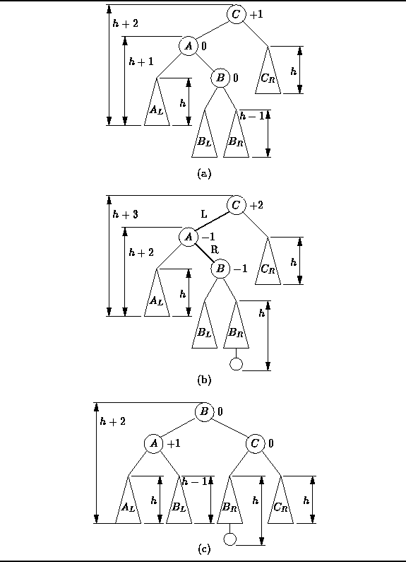

Data Structures and Algorithms
with Object-Oriented Design Patterns in C++
Data Structures and Algorithms
with Object-Oriented Design Patterns in C++
The preceding cases have dealt with access paths LL and RR.
Clearly two more cases remain to be implemented.
Consider the case
where the root becomes unbalanced with a positive balance factor
but the left subtree of the root has a negative balance factor.
This situation is shown in Figure  (b).
(b).

Figure: Balancing an AVL Tree with a Double (LR) Rotation
The tree can be restored by performing an RR rotation at node A,
followed by an LL rotation at node C.
The tree which results is shown in Figure (c).
The LL and RR rotations are called
single rotations .
The combination of the two single rotations is called a
double rotation
and is given the name LR rotation
because the first two edges in the insertion path from node C
both go left and then right.
Obviously, the left-right mirror image of the LR rotation is called an RL rotation . An RL rotation is called for when the root becomes unbalanced with a negative balance factor but the right subtree of the root has a positive balance factor. Double rotations have the same properties as the single rotations: The result is a valid, AVL-balanced search tree and the height of the result is the same as that of the initial tree.
Clearly the four rotations, LL, RR, LR, and RL, cover all the possible ways in which any one node can become unbalanced. But how many rotations are required to balance a tree when an insertion is done? The following theorem addresses this question:
Theorem When an AVL tree becomes unbalanced after an insertion, exactly one single or double rotation is required to balance the tree.
extbfProof When an item, x, is inserted into an AVL tree, T, that item is placed in an external node of the tree. The only nodes in T whose heights may be affected by the insertion of x are those nodes which lie on the access path from the root of T to x. Therefore, the only nodes at which an imbalance can appear are those along the access path. Furthermore, when a node is inserted into a tree, either the height of the tree remains the same or the height of the tree increases by one.
Consider some node c along the access path from the root of T to x. When x is inserted, the height of c either increases by one, or remains the same. If the height of c does not change, then no rotation is necessary at c or at any node above c in the access path.
If the height of c increases then there are two possibilities: Either c remains balanced or an imbalance appears at c. If c remains balanced, then no rotation is necessary at c. However, a rotation may be needed somewhere above c along the access path.
On the other hand, if c becomes unbalanced, then a single or a double rotation must be performed at c. After the rotation is done, the height of c is the same as it was before the insertion. Therefore, no further rotation is needed above c in the access path.
Theorem suggests the following
method for balancing an AVL tree after an insertion:
Begin at the node containing the item which was just inserted
and move back along the access path toward the root.
For each node determine its height and check the balance condition.
If the height of the current node does not increase,
then the tree is AVL balanced and no further nodes need be considered.
If the node has become unbalanced, a rotation is needed to balance it.
After the rotation, the height of the node remains unchanged,
the tree is AVL balanced and no further nodes need be considered.
Otherwise, the height of the node increases by one,
but no rotation is needed and we proceed to the next node on the access path.
 Copyright © 1997 by Bruno R. Preiss, P.Eng. All rights reserved.
Copyright © 1997 by Bruno R. Preiss, P.Eng. All rights reserved.